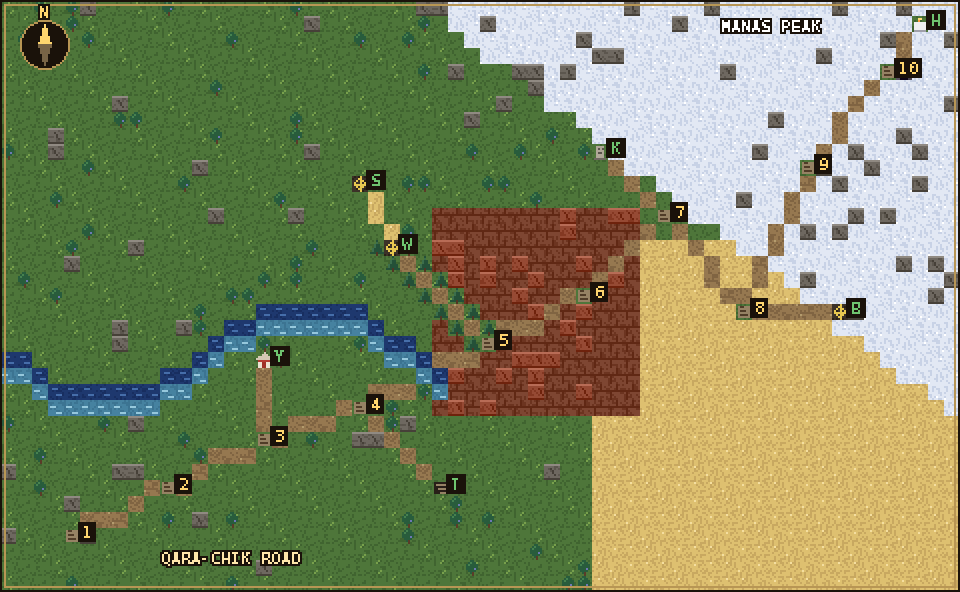
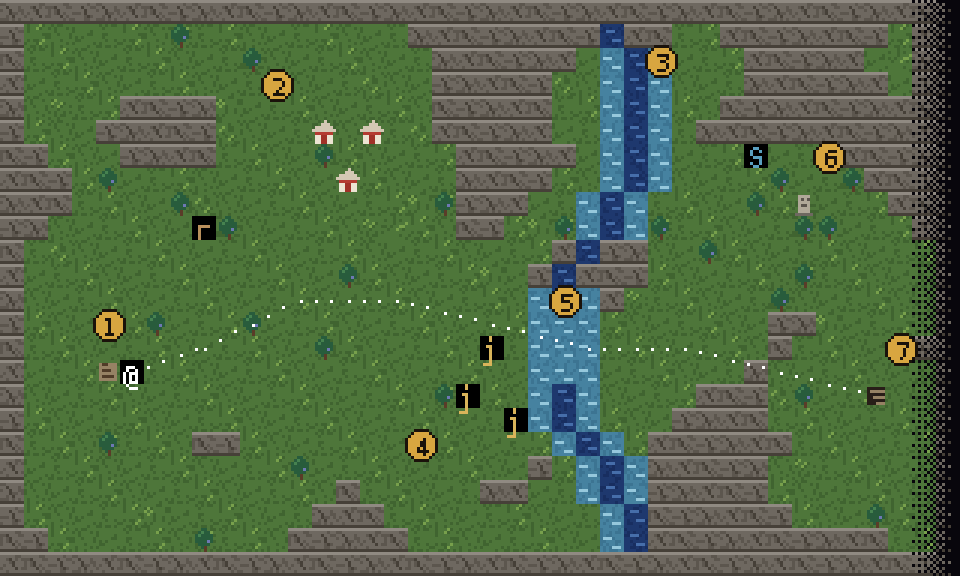
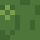
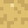
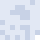
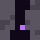

STEPPE CRAWL // fan guide
unofficial · made by one player from Talas · not by the game's maker · the real game is at steppecrawl.online
the road, as i draw it
The game never shows you the whole road at once, so I drew it. This is a schematic: the ten valleys are always
in this order, but the doors to the regions turn up at a different valley each run, inside a range (that's the numbers
after each region below). Hand-drawn tiles, one tile = nothing in particular.

- 1Kara-Oi Meadows · home end of the road. Junipers, marmots, jackals. Tökö likes it here.
- 2Besh-Tash Valley · five stones, a loud river. Water snakes in the shallows.
- 3Kara-Koyun Valley · empty yurt rings. Soodagers start here.
- 4Uzun-Akmat · spruce on the north side, wolves on the south. Believe it.
- 5Kara-Suu Canyon · red walls, black water. Archers. My most-died valley.
- 6Chatkal Highlands · where they carry the malka in felt pots. Nobody is carrying anything.
- 7Ala-Bel Pass · wind, almasty, the wind again.
- 8Betpak-Dala · the Hunger Steppe. You see everything and everything sees you.
- 9Aksay Plateau · the Kurultai ground under snow. Feels wrong in a good way.
- 10Under Manas Peak · the cleft. Three tamgas, then in.
- Ythe White Yurts · one level, every patron's altar. Door turns up in valleys 2-4.
- TSmugglers' Tunnels · 2 levels, doors in 3-5. Bakai at the bottom. No tamga, just loot.
- WArslanbob Woods · 4 levels, doors in 4-6. Ak Börü + tamga of the Chubar.
- SMoiynkum Sands · 3 levels, inside the Woods. Sary Chayan + tamga of the Boztorgoy.
- KOld Kurgans · 3 levels, doors in 7-8. Golden Warrior + tamga of the Karakoyun.
- BPass of the Black Blizzard · 3 levels, doors in 7-9. Kara Boran Ene + tamga of the Tanıp.
- HHidden Valley of Janyl · behind the cleft. The Herald. The Ene Malka. Go home.
a valley, explored (Kara-Oi, one of my runs)
What valley 1 looked like in my W44 run, redrawn from memory with my tiles. Every valley is random; this is just to show
how to read one. Monsters as letters like ASCII mode.

- 1you start here, on the < from the road
- 2a herders' camp: yurts. Often an item or two inside
- 3the river. Deep water (dark blue) you can't cross; shallows are slow
- 4jackal pack (j j j) by the ford. Pull them back west, between the junipers
- 5the ford, the only shallow crossing. Shallows are slow: never fight in them
- 6a balbal, just decoration up here (in the Kurgans it would walk)
- 7> the way on. Press > to travel, > again to take it
my fan tileset
8×8 pixels each, drawn in a Python script on a laptop with a broken F5 key. The real game uses the Dungeon Crawl tiles
plus its own Iradi ones (and an ASCII mode). Mine are only for maps on this site; take them if you want, just say where from.

meadow, tufts
shallow water
deep water

sand (Moiynkum)

snow (Blizzard)
altar

the sealed cleft